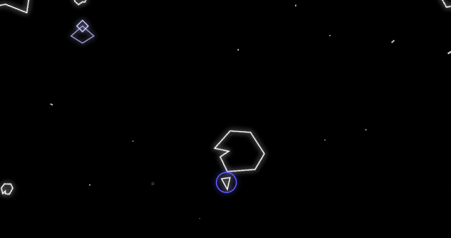

Asteroids Game Concept
Asteroids is a favorite game dating back to the 1970's. It was so popular that Atari needed to add larger boxes to their original machines to hold all the quarters.
The aim is to fly a small spaceship while avoiding floating asteriods and hostile alien flying saucers, all the while shooting them with pew-pew rays. The player scores points by shooting down asteroids and flying saucers, gaining additional lives in the process. The player loses a life after getting smushed by an asteroid or saucer. It's fun.
Concept Image

The original game used vector artwork. I plan to honor this classic style, but use image spritesheets.
Key Features
- Familiar gameplay using the keyboard
- Blast asteroids and flying saucers
- Simple graphics
- Score points and gain lives through skillful play
Challenges and Risks
- Asteroids, spaceship, aliens and other game elements have unique movement properties
- Moving elements that wrap around to the opposite edge of the screen
- Game must ship in March
- Unfamiliar server tech
- Not well suited to mobile gameplay
Project Resources
- Project Tracking on Workflowy
- Asteroids project on GitHub (TODO)
Research
Others have created HTML5 versions of the classic Asteroids game. I plan to take my own route, but refer often to the other games to compare control responsiveness and playability.